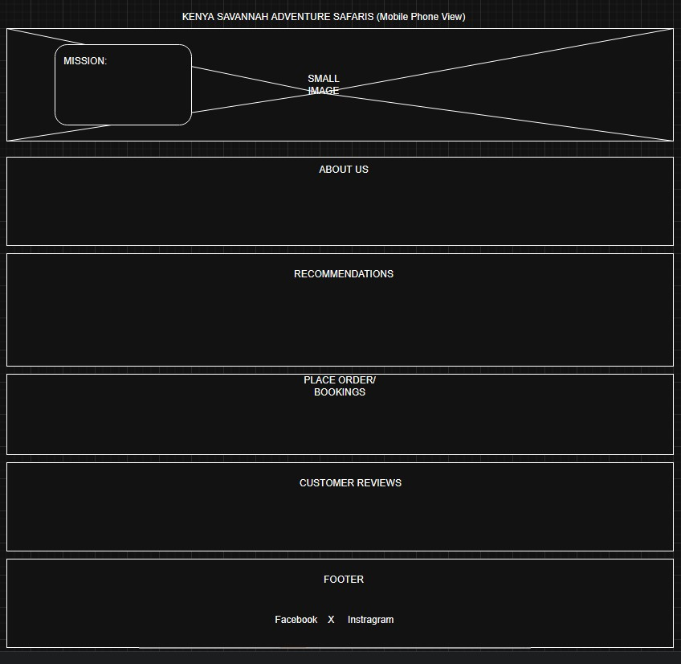
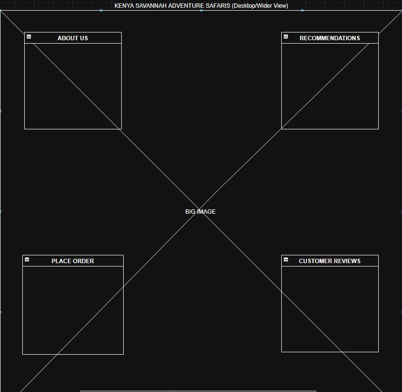

Site Name
This name represents a Safaris tour company that is focused on adventure Safaris in Kenya.
Site Purpose
The site provides detailed information on all the adventure Safaris destination in Kenya. It also outline the services the company offers, including travel and camping.
Scenarios
Color Schema
Primary Colors:
1. Deep Sepia (Hex: #704214) 2. Muted Gold (Hex: #B8860B) 3. Supporting Colors a. #FAF8F6 b. #333333
Usage of each color:
1. Deep Sepia: a. Headings (h1, h2, h3): b. Paragraph Text (p): Deep Sepia can be used sparingly for specific paragraph elements that need emphasis: i. Introductory paragraphs at the beginning of major articles. ii. Blockquotes. iii. Captions. c. Borders and Dividers: This color will be ideal for subtle borders around content sections, horizontal rules separating articles, or decorative elements that frame images. d. Footer Background subtle, elegant highlight.
2. Muted Gold: a. Accent Color: Muted Gold will primarily serve as an accent color, drawing attention to key interactive elements and important information. b. Navigation Links (Active/Hover State): When a user hovers over or selects a navigation link, Muted Gold will highlight the link, indicating interactivity and importance. c. Call-to-Action (CTA) Buttons e. Iconography
3. Other Colors: a. #FAF8F6: Background Color: A very light cream or off-white would provide a clean, readable canvas, allowing the Sepia and Gold to stand out effectively. This prevents the site from feeling too dark or heavy. b. #333333 Standard Body Text: A very dark grey for general paragraph text ensures optimal readability against the light background.
Typography
1. Lora (Serif) > I will use this font for all primary and secondary headings, blockquotes, and call to action text. 2. Open Sans (Sans-Serif) > I will use it for body text (paragraphs), navigation menus, captions and lables, forms and inputs, and footer text.
Wireframe:
Small view wireframe:
Wider view wireframe:
